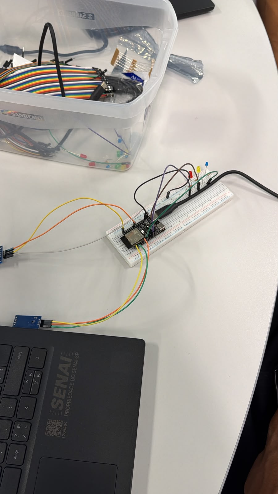
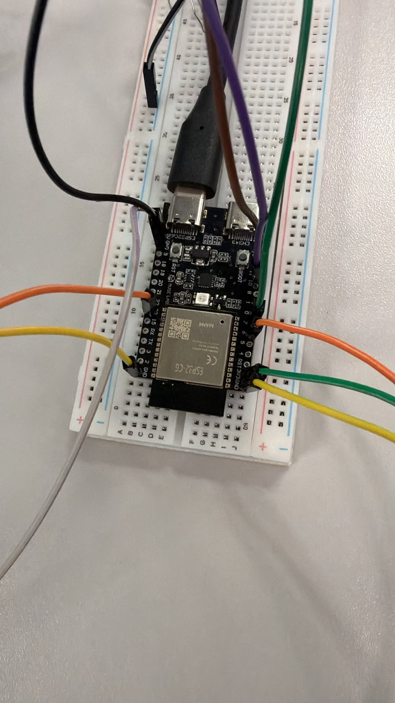
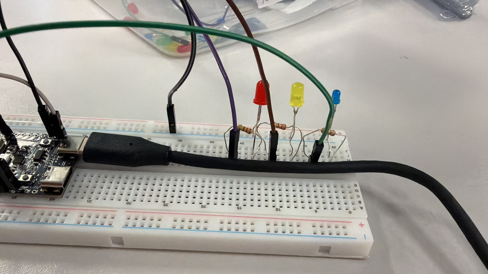

Ar, calor e umidade, ao vivo na tela.
Um ESP32 mede o ambiente, envia os dados por MQTT e esta página mostra tudo em tempo real. Passou do limite, o LED acende na placa e o cartão fica laranja aqui.
Grupo 2 · Turma 2TSD2
Um ESP32 mede o ambiente, envia os dados por MQTT e esta página mostra tudo em tempo real. Passou do limite, o LED acende na placa e o cartão fica laranja aqui.
Coletar temperatura, umidade e qualidade do ar com um ESP32 e mostrar os valores em tempo real numa página web, usando MQTT. Quando um valor passa do limite, um LED se acende no circuito e o cartão correspondente fica em alerta na tela.


O ESP32 lê os sensores a cada 3 segundos e publica nos tópicos aulas/professor/temperatura, aulas/professor/umidade e aulas/professor/qualidade_ar do broker Mosquitto (porta 1883). Esta página se conecta ao mesmo broker por WebSockets (porta 9001) com a biblioteca Paho MQTT e atualiza os cartões a cada mensagem.
ESP32→Mosquitto→Página web

Desconectado
--°C
Alerta acima de 28 °C
Aguardando dados
--%
Alerta acima de 56 %
Aguardando dados
--ppm
Alerta acima de 200 ppm
Aguardando dados
Última atualização: nenhuma ainda